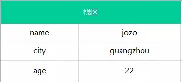
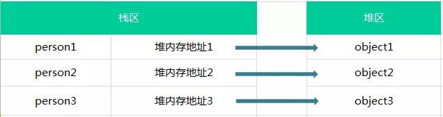
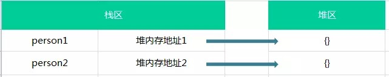
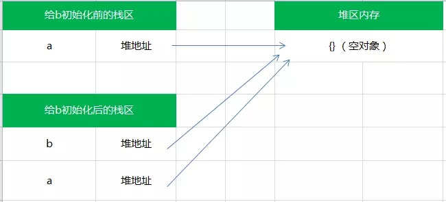

分享人：姚富成
目录
1.背景介绍
2.知识剖析
3.常见问题
4.解决方案
5.编码实战
6.扩展思考
7.参考文献
8.更多讨论
JavaScript语言的每一个值都属于某一种数据类型，JavaScript数据类型共有六种（es6新增的symbol暂时没涉及，暂不讲解）
数值(number)：整数和小数（如1和1.2）
字符串(string)：文本（如hello world）
布尔值(boolean):表示真假两个特殊值，既true（真）和false（假）
undefined：未定义，或不存在
null：空值
一个对象往往由多个原始类型的值合成，可以看作是一个存放各种值的容器
对象(object)：各种值的集合
狭义对象(object)：用{}定义的对象，它是一组无序的属性集合
数组(array)：使用单独的变量名来存储一系列的值
函数(function)：处理数据的方法
javascript中的变量可能包含两种不同的数据类型，基本类型和引用类型
基本类型有：
number（数字）
string（字符串）
boolean（布尔）
undefined（未定义）
null（空）
任何方法都无法改变一个基本类型的值，比如一个字符串：
var name = 'jay';
name.toUpperCase(); // 输出 'JAY'
console.log(name); // 输出 'jay'
会发现原始的name并未发生改变，而是调用了toUpperCase()方法后返回的是一个新的字符串。
再比如：
var person = 'jay';
person.age = 22;
person.method = function(){//...};
console.log(person.age); // undefined
console.log(person.method); // undefined
通过上面代码可知，我们不能给基本类型添加属性和方法，再次说明基本类型时不可变的；
只有在它们的值相等的时候它们才相等。 但你可能会这样：
var a = 1;
var b = true;
console.log(a ==/=== b);//true
在用==比较两个不同类型的变量时会进行一些类型转换。像上面的比较先会把true转换为数字1再和数字1进行比较，结果就是true了。 这是当比较的两个值的类型不同的时候==运算符会进行类型转换，但是当两个值的类型相同的时候，即使是==也相当于是===。
假如有以下几个基本类型的变量：
var name = 'jozo';
var city = 'guangzhou';
var age = 22;
那么它的存储结构如下图：
栈区包括了 变量的标识符和变量的值。
引用类型指的是对象，对象是属性和方法的集合，也就是说引用类型可以拥有属性和方法，属性又可以包含基本类型和引用类型
我们可为为引用类型添加属性和方法，也可以删除其属性和方法，如：
var person = {};//创建空对象 --引用类型
person.name = 'jozo';
person.age = 22;
person.sayName = function(){console.log(person.name);}
person.sayName();// 'jozo'
delete person.name; //删除person对象的name属性
person.sayName(); // undefined
上面代码说明引用类型可以拥有属性和方法，并且是可以动态改变的。
javascript中引用类型的存储需要内存的栈区和堆区（堆区是指内存里的堆内存）共同完成，栈区内存保存变量标识符和指向堆内存中该对象的指针， 也可以说是该对象在堆内存的地址。
var person1 = {name:'jozo'};
var person2 = {name:'xiaom'};
var person3 = {name:'xiaoq'};
则这三个对象的在内存中保存的情况如下图：

var person1 = {};
var person2 = {};
console.log(person1 == person2); // false
引用类型时按引用访问的，换句话说就是比较两个对象的堆内存中的地址是否相同，那很明显，person1和person2在堆内存中地址是不同的
所以这两个是完全不同的对象，所以返回false
在从一个变量向另一个变量赋值基本类型时，会在该变量上创建一个新值，然后再把该值复制到为新变量分配的位置上：
var a = 10;
var b = a;
a ++ ;
console.log(a); // 11
console.log(b); // 10
这两个变量可以参加任何操作而相互不受影响。
也就是说基本类型在赋值操作后，两个变量是相互不受影响的。
当从一个变量向另一个变量赋值引用类型的值时，同样也会将存储在变量中的对象的值复制一份放到为新变量分配的空间中。前面讲引用类型的时候提到， 保存在变量中的是对象在堆内存中的地址，所以，与简单赋值不同，这个值的副本实际上是一个指针，而这个指针指向存储在堆内存的一个对象。那么赋值操作后，两个变量都保存了同一个对象地址，则这两个变量指向了同一个对象。因此，改变其中任何一个变量，都会相互影响：
var a = {}; // a保存了一个空对象的实例
var b = a; // a和b都指向了这个空对象
a.name = 'jozo';
console.log(a.name); // 'jozo'
console.log(b.name); // 'jozo'
b.age = 22;
console.log(b.age);// 22
console.log(a.age);// 22
console.log(a == b);// true
它们的关系如下图：
因此，引用类型的赋值其实是对象保存在栈区地址指针的赋值，因此两个变量指向同一个对象，任何的操作都会相互影响。
感谢大家观看
by: 姚富成